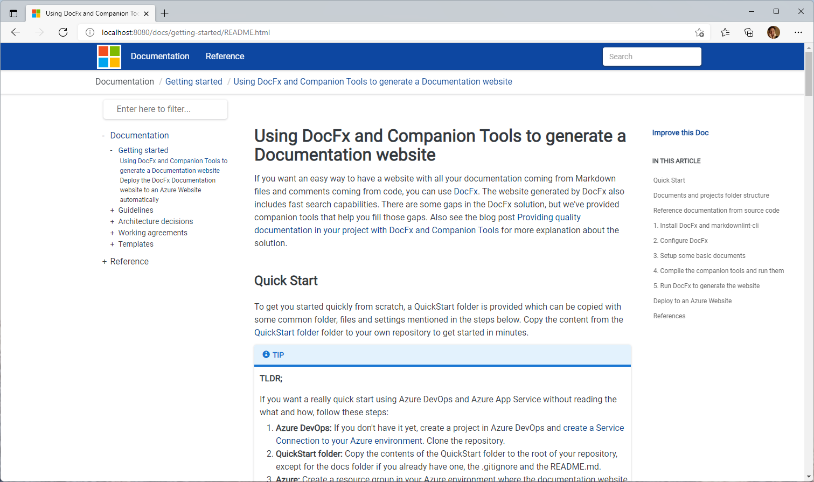

Using DocFx and Companion Tools to generate a Documentation website
If you want an easy way to have a website with all your documentation coming from Markdown files and comments coming from code, you can use DocFx. The website generated by DocFx also includes fast search capabilities. There are some gaps in the DocFx solution, but we've provided companion tools that help you fill those gaps. Also see the blog post Providing quality documentation in your project with DocFx and Companion Tools for more explanation about the solution.
Quick Start
To get you started quickly from scratch, a QuickStart folder is provided which can be copied with some common folder, files and settings mentioned in the steps below. Copy the content from the QuickStart folder folder to your own repository to get started in minutes.
Tip
TLDR;
If you want a really quick start using Azure DevOps and Azure App Service without reading the what and how, follow these steps:
- Azure DevOps: If you don't have it yet, create a project in Azure DevOps and create a Service Connection to your Azure environment. Clone the repository.
- QuickStart folder: Copy the contents of the QuickStart folder to the root of your repository, except for the docs folder if you already have one, the .gitignore and the README.md.
- Azure: Create a resource group in your Azure environment where the documentation website resources should be created.
- Create Azure resources: Fill in the default values in infrastructure/variables.tf and run the commands from Step 3 - Deploy Azure resources from your local machine to create the Azure Resources.
- Pipeline: Fill in the variables in samples/pipelines/azure-devops/documentation.yml, commit the changes and push the contents of the repository to your branch (possibly through a PR). Now you can create a pipeline in your Azure DevOps project that uses the samples/pipelines/azure-devops/documentation.yml and run it.

Documents and projects folder structure
The easiest is to work with a mono repository where documentation and code live together. If that's not the case in your situation but you still want to combine multiple repositories into one documentation website, you'll have to clone all repositories first to be able to combine the information. In this recipe we'll assume a monorepo is used.
In the steps below we'll consider the generation of the documentation website from this content structure:
📂QuickStart // root
📂docs // documentation root
📂.attachments // images and other attachments
📂.docfx // docfx configuration files
📂template // docfx template for website
📂x-cross // cross reference configuration
📂general // Sample general documentation
📂images // root images for favicon.ico and logo.png
📂services // Sample service documentation
📄.order // for ADO and TocGenerator. Determines order of files in a folder.
📄docfx.json // configuration of DocFx input and output
📄index.md // root document of the website
📄toc.yml // configuration of the top navigation of the website
📄web.config // IIS configuration
📂src // Sample sources
📂build // Shared compiler configuration settings
📂DotNetCoreSampleWebAPI // Sample .NET web api
📄Directory.Build.props // Force settings in all child solutions/projects
📄index.md // documentation
📄.markdownlint.json // Configuration file for markdownlint tool
📄GenerateDocWebsite.cmd // Batchfile for running generation
We'll be using the DocLinkChecker tool to validate all links in documentation and for orphaned attachments. That's the reason we have all attachments in the .attachments folder.
In the generated website from the QuickStart folder you'll see that the hierarchies of documentation and references is combined in the left table of contents. This is achieved by the definition and use of x-cross\toc.yml. If you don't want the hierarchies combined, just remove the folder and file from your environment and (re)generate the website.
A .markdownlint.json is included with the contents below. The MD013 setting is set to false to prevent checking for maximum line length. You can modify this file to your likings to include or exclude certain tests.
{
"MD013": false
}
The contents of the /samples folder is explained in the recipe Deploy the DocFx Documentation website to an Azure Website automatically.
Reference documentation from source code
DocFx can generate reference documentation from code, where C# and Typescript are supported best at the moment. In the QuickStart folder we only used C# projects. For DocFx to generate quality reference documentation, quality triple slash-comments are required. See Triple-slash (///) Code Comments Support. To enforce this, it's a good idea to enforce the use of StyleCop. There are a few steps that will give you an easy start with this.
First, you can use the Directory.Build.props file in the /src folder in combination with the files in the build/dotnet folder. By having this, you enforce StyleCop in all Visual Studio project files in it's sub folders with a configuration of which rules should be used or ignored. You can tailor this to your needs of course. For more information, see Customize your build and Use rule sets to group code analysis rules.
To make sure developers are forced to add the triple-slash comments by throwing compiler errors and to have the proper settings for the generation of documentation XML-files, add the TreatWarningsAsErrors and GenerateDocumentationFile settings to every .csproj file. You can add that in the first PropertyGroup settings like this:
<Project Sdk="Microsoft.NET.Sdk">
<PropertyGroup>
...
<GenerateDocumentationFile>true</GenerateDocumentationFile>
<TreatWarningsAsErrors>true</TreatWarningsAsErrors>
</PropertyGroup>
...
</Project>
Now you are all set to generate documentation from your C# code. For more information about languages supported by DocFx and how to configure it, see Introduction to Multiple Languages Support.
Note
You can also add a PropertyGroup definition with the two settings in Directory.Build.props to have that settings in all projects. But in that case it will also be inherited in your Test projects.
1. Install DocFx and markdownlint-cli
Go to the DocFx website to the Download section and download the latest version of DocFx. Go to the github page of markdownlint-cli to find download and install options.
You can also use tools like Chocolatey to install:
choco install docfx
choco install markdownlint-cli
2. Configure DocFx
Configuration for DocFx is done in a docs\docfx.json file. Best is to store this file in the root of your docs folder.
Note
You can store the docfx.json somewhere else in the hierarchy, but then you need to provide the path of the file as an argument to the docfx command so it can be located. It can have side effects, like ~ not properly addressing the docs root.
Below is a good configuration to start with, where documentation is in the /docs folder and the sources are in the /src folder:
{
"metadata": [
{
"src": [
{
"src": "../src",
"files": ["**.csproj"],
"exclude": ["**/bin/**", "**/obj/**", "**/[Tt]ests/**"]
}
],
"dest": "./reference",
"includePrivateMembers": false,
"disableGitFeatures": false,
"disableDefaultFilter": false,
"noRestore": false,
"namespaceLayout": "flattened"
}
],
"build": {
"content": [
{
"files": [
"*.{md,yml}",
"general/**/*.{md,yml}",
"services/**/*.{md,yml}",
"reference/**/*.{md,yml}",
".docfx/x-cross/toc.yml"
]
}
],
"resource": [
{ "files": [".attachments/**", "**/.attachments/**", "**/images/**"] },
{ "files": ["web.config"] }
],
"dest": "_site",
"globalMetadata": {
"_appTitle": "QuickStart Documentation",
"_appName": "QUickStart Documentation",
"_appLogoPath": "images/logo.png",
"_appFaviconPath": "images/favicon.ico",
"_enableSearch": true,
"_enableNewTab": true
},
"template": ["default", ".docfx/template"],
"globalMetadataFiles": [],
"fileMetadataFiles": [],
"postProcessors": [],
"noLangKeyword": false,
"keepFileLink": false,
"disableGitFeatures": false,
"xrefService": ["https://xref.docs.microsoft.com/query?uid={uid}"],
"markdownEngineName": "markdig",
"markdownEngineProperties": {
"markdigExtensions": [
"tasklists",
"diagrams"
]
}
}
}
3. Setup some basic documents
We suggest starting with a basic documentation structure in the /docs folder. In the provided QuickStart folder we have a basic setup. You can use templates like working agreements and such from the CSE Playbook.
To have a proper landing page of your documentation website, you can use a markdown file called INDEX.MD in the root of your repository. Contents can be something like this:
# QuickStart Documentation
This is the landing page of the QuickStart Documentation website. You can add specific links that are important to provide direct access.
> [!TIP]
> Try not to duplicate the links on the top of the page, unless it really makes sense.
To get started with the setup of this website, read the getting started document with the title [Using DocFx and Companion Tools](./README.md).
## Style of this website
This documentation website is currently setup with the basics of the [DocFx Material](https://ovasquez.github.io/docfx-material/) style added with the Microsoft logo. The combination can be found in **/QuickStart/docfx/template**. Support for Mermaid and a copy-code button is added to the custom template as well.
4. Compile the companion tools and run them
Note
To explain each step, we'll be going through the various steps in the next few paragraphs. In the provided sample, a batch-file called GenerateDocWebsite.cmd is included. This script will take all the necessary steps to compile the tools, execute the checks, generate the table of contents and execute docfx to generate the website.
To check for proper markdown formatting the markdownlint-cli tool is used. The command takes it's configuration from the .markdownlint.json file in the root of the project. To check all markdown files, simply execute this command:
markdownlint **/*.md
We're using the docfx-companion-tools for checking links and TOC generation. Check the install instructions how this can be done.
The DocLinkChecker companion tool is used to validate what's in the docs folder. It validates links between documents and attachments in the docs folder and checks if there aren't orphaned attachments. An example of executing this tool, where the check of attachments is included:
DocLinkChecker.exe -d ./docs -a
The DocFxTocGenerator tool is needed to generate a table of contents for your documentation, so users can navigate between folders and documents. If you have compiled the tool, use this command to generate a table of content file toc.yml. To generate a table of contents with the use of the .order files for determining the sequence of articles and to automatically generate index.md documents if no default document is available in a folder, this command can be used:
DocFxTocGeneration.exe -d ./docs -sri
5. Run DocFx to generate the website
Run the docfx command to generate the website, by default in the _site folder.
Tip
If you want to check the website in your local environment, provide the --serve option to either the docfx command or the GenerateDocWebsite script. A small webserver is launched that hosts your website, which is accessible on localhost.
Style of the website
If you started with the QuickStart folder, the website is generated using a custom theme using material design and the Microsoft logo. The logo and favorite icon are images that are configured in docfx.json. You can change this to your likings. For more information see How-to: Create A Custom Template | DocFX website (dotnet.github.io).
Deploy to an Azure Website
After you completed the steps, you should have a default website generated in the _site folder. But of course, you want this to be accessible for everyone. So, the next step is to create for instance an Azure Website and have a process to automatically generate and deploy the contents to that website. That process is described in the recipe Deploy the DocFx Documentation website to an Azure Website automatically.